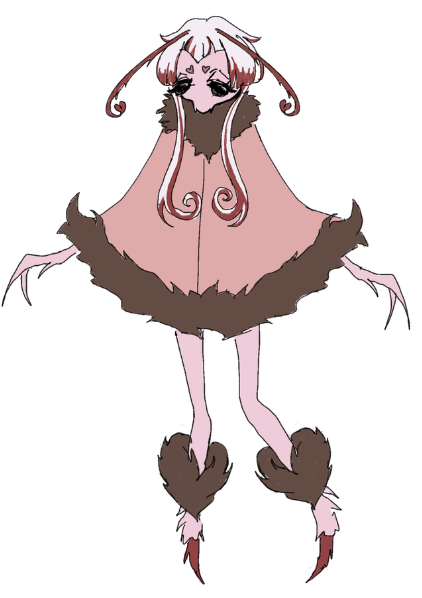
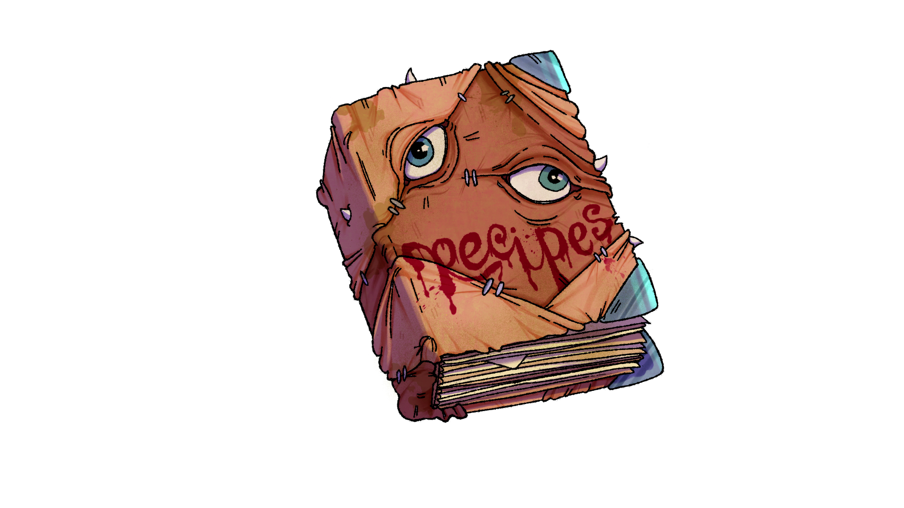

Portfolio
Clientes especiales




Un juego de cocina siniestro e inolvidable
Clientes especiales

Oniric Studios es una pequeña agrupación de estudiantes que se han unido con el propósito de crear videojuegos.
Su primer proyecto se llama Floralis Bakery, un videojuego de cocina con temática tenebrosa que no deja indiferente a nadie
¡Para saber todo sobre el desarrollo de Floralis Bakery no olvides seguirnos en todas nuestras redes sociales!
links OJO